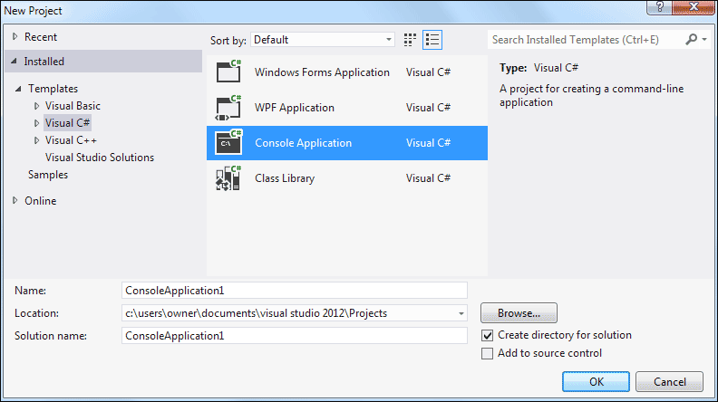

Getting Started with C# .NET
What we're going to do first is to create a very simple programme, so that you can see what makes up a C# .NET project. By the end of this chapter, you'll have learnt the following:
- How to create new projects
- What the Solution Explorer is
- The various files that make up of a C# .NET project
- How to save your work
- How to run programmes
- The importance of the Main statement
The simple programme we'll create is called a Console Application. We won't be doing much else with this type of application, as this is a book about Windows Applications. Off we go then!
Open the Visual C# Express software from your programs menu. When you first open C# (pronounced C Sharp), you should see a screen something like this (screenshot is for 2008 version, but 2005 version is the same):
Click here to see the image in a new popup window (86K)
If you have the 2010 version of Visual C# Express then your screen looks like this:
Click here to see the image in a new popup window (37K)
If you have Visual Studio Express 2012, your opening screen will look like this:
C# .NET 2012 ( new popup window - 40K )
When you're looking at this piece of software for the first time, it can seem hugely complex and daunting. The temptation is to think you're never going to get to grips with something so difficult. But don't worry - after a few lessons things will start to feel familiar, and you won't feel nearly half as intimidated as you do now!
A Simple C# Console Application
A Console Application is one that looks like a DOS window. If you don't know
what these are, click your Start menu in the bottom left of your screen.
Click on Run. From the dialogue box that appears, type cmd:
In Vista and Windows 7, type cmd in the search box at the bottom of the start menu. In Windows 8, the search box is on the Start Screen page. You'll then see the search results appear:
Click cmd.exe to see the console appear.
Click OK and you'll see a black screen, like this one:
This is the type of window you'll see for our Console Application. When you create your Windows forms, there's a whole lot of code to get used to. But Console Applications start off fairly simple, and you can see which part of the programme is the most important.
So with Visual C# Express open, click File from the menu bar at the
top. From the File menu, select New Project (or click the New Project
link on the left of the opening screen in versions 2010 and 2012):
When you click on New Project, you'll see the following dialogue box appear:
Or this one in version 2010 of the software:
For 2012 users, click on Templates from the list on the left. Under Templates, click on Visual C#. You'll then see Console Application appear in the middle:

For all versions, the New Project dialogue box is where you select the type of project you want to create. If you only have the Express edition of Visual C#, the options are limited. For the rest of this book, we'll be creating Windows Applications. For now, select Console Application. Then click OK.
When you click OK, a new Console Application project will be created for you.
Some code should be displayed:
As well as the code, have a look on the right hand side and you'll see the Solution Explorer. This is where all the files for your project are. (If you can't see the Solution Explorer, click View from the C# menu bar at the top. From the View menu, click Solution Explorer.)
The code itself will look very complicated, if you're new to programming. We'll get to it shortly. For now, right click the Program.cs tab at the top, and click Close from the menu that appears:
Or just click the X in C# 2010 and 2012:
Now double click the Program.cs file in the Solution Explorer:
When you double click Program.cs, you should see the code reappear. So this code is the programme that will run when anyone starts your application.
Now click the plus symbol (arrow symbol in version 2012) next to Properties in the Solution Explorer above. You'll see the following:
The file called AssemblyInfo.cs contains information about your programme. Double click this file to open it up and see the code. Here's just some of it:
The reddish colour text is something you can change. You can add a Title, Description, Copyright, Trademark, etc.
But right click the AssemblyInfo.cs tab at the top, and click Close from the menu. Now, in the Solution Explorer, click the plus symbol next to References:
These are references to code built in to C# (you won't see as many entries in earlier versions of the software). Much later, you'll see how to add your own files to this section.
Before we add some code, let's save the project. We'll do that in the next part below.